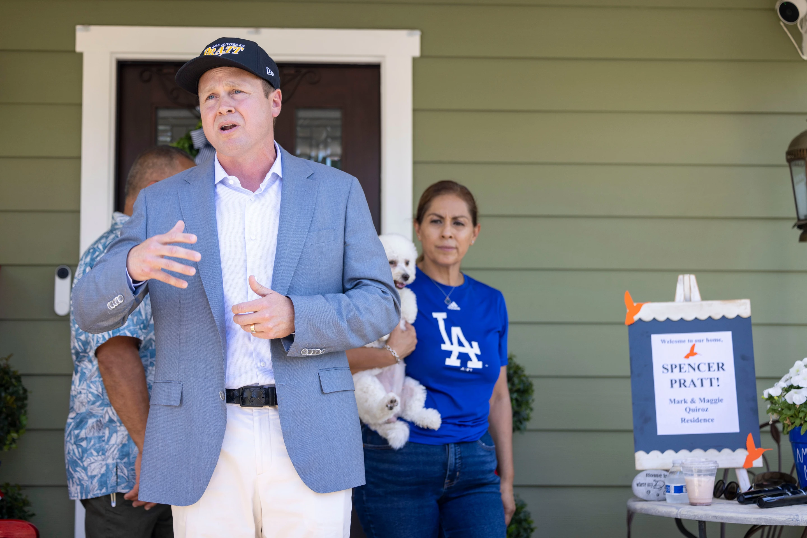

Monday, June 29, 2026
LIVE 2hrs ago
Los Angeles mayoral candidate Spencer Pratt during a campaign event Sunday, May 31, 2026, in Los Angeles.


LOS ANGELES — California went into a primary election Tuesday with its two biggest races marked by uncertainty and with a pair of outsider candidates hoping to crack apart the state’s sturdy Democratic hierarchy.
In the race for governor, Steve Hilton, a former Fox News TV presenter and British political adviser, is pleading with Republicans to get behind him as he fights for one of two spots in the November election with two Democrats, billionaire climate activist Tom Steyer and former state attorney general Xavier Becerra.
Reality TV star Spencer Pratt is trying to transform his insurgent campaign into a surprising upset of Democratic Mayor Karen Bass in the Los Angeles race for mayor. The two cluster close to Nithya Raman, a progressive city council member running to the left of Bass.
“We’re not giving up on LA,” Pratt told supporters at a block party Sunday, to cheers. “We have to fight.”
At one point, Democrats were worried the party’s crowded field of gubernatorial candidates may allow two Republicans to advance to November. But in the waning days of the campaign, Hilton is warning the opposite could happen — what he called a “doomsday scenario” where only Democrats advance.
Hilton is begging his top Republican opponent, county Sheriff Chad Bianco, to exit the race, worried that an all-Democratic ticket will suppress GOP turnout statewide and change the dynamics of contests for Congress and the Legislature.
“Locking out a Republican from the November ballot with Becerra and Steyer would be a disaster for California. It means no change. “It’s a disaster for everybody running as a Republican all the way down the ballot,” Hilton remarked on social network X.
Mail voting started in early May but only 15% of voters had submitted their votes by Sunday. That has left the contenders feeling there is potential for a last-minute shake-up in the closing days of the contest.
Vulnerable LA mayor runs for second term Bass’ rocky first term has left her vulnerable in predominantly Democratic Los Angeles. She points to a decline in homelessness, but camps and rows of rusted RVs are still a familiar sight in many areas. At the same time, she’s still reeling from the lingering repercussions of the 2025 Palisades Fire, the most destructive in Los Angeles ever. The fire broke out while Bass was in Ghana as part of a presidential delegation. Pratt lost his home in the disaster and has made the fire and the city’s recovery a centerpiece of his campaign.
The quality of life has been declining for years, with dirtier streets, more homeless encampments and a lack of pride in the neighborhood she has lived in her entire life, said Vivian Escalante, a historian who lives in heavily Hispanic Boyle Heights, the neighborhood next door to downtown, at Pratt’s block party.
“It’s gotten a lot worse,” remarked Escalante, wearing a Pratt cap. “The Democratic Party has abandoned us completely,” she stated.
The LA election is nominally non-partisan, but Bass and Raman, a Democrat who decided to oppose her one-time friend at the last minute, are in the top tier of competitors.
Pratt, who became known with his wife, Heidi Montag, on “The Hills,” is a registered Republican who has earned a nod of approval, if not an explicit formal support, from President Donald Trump. He’s tried to stay out of national politics, stating his only issues are within municipal limits.
Other candidates trailed far behind in the poll, co-sponsored by The Los Angeles Times and the Institute of Governmental Studies at the University of California, Berkeley. It showed Bass locked in a tight contest with Raman and Pratt. The poll was conducted May 19 to May 24 among 1,351 likely voters and found no contender with a statistically significant lead.
The city is at a crossroads.
For years, Hollywood employment have been fleeing to cheaper production areas. Prolonged pandemic shutdowns killed a downtown resurgence and many business buildings are still desperate for occupants. The city has historically had problems providing basic services, from repairing sidewalks and paving buckling streets to keeping lighting on.
Tight contest for governor without a clear favorite The governor’s race is the most wide open in a generation. There are almost 50 names on the ballot.
Democratic Gov. Gavin Newsom is prevented by law from running for a third term. Other hopefuls vying to take his position include former Democratic U.S. Rep. Katie Porter, Democrat Matt Mahan, the mayor of San Jose and Riverside County Sheriff Bianco.
Steyer, a former hedge fund investor and now a liberal activist, has broken spending records in his bid to make it to the November battle. Hilton, a former Fox News anchor backed by Trump, has vowed to cut costs in a state with some of the country’s highest gas rates, energy bills and taxes. Becerra has been touting his expertise to argue he’s the most qualified to lead the nation’s second-most populous state, having served as health secretary in the Biden administration, a former member of the U.S. House and state attorney general.
In general, the Republicans running are promising big changes after years of Democratic rule — the Democrats haven’t lost a statewide election in 20 years and the last time Republicans won a mayor’s race in Los Angeles was 1997. Democrats, who have been in authority for years, are promising to cut expenditures and to continue to battle the Trump administration in its many battles with Democratic California.